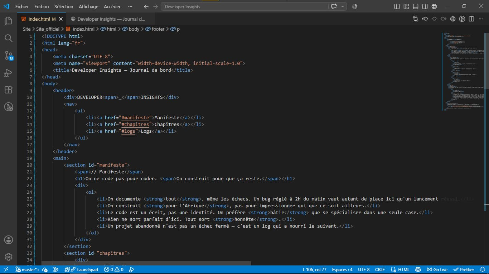

Ce que j'ai retenu : le HTML qui "marche" n'est pas le HTML qui a du sens
Après l'exercice du log #2 — deviner la structure d'un site sans écrire une ligne — je me suis senti prêt à passer à l'action : reprendre tout le HTML du site officiel, moi-même, sans aide.
Première tentative : catastrophe polie. Des divs partout, un h1 collé sur mon logo (alors qu'un h1 c'est censé être LE titre principal de toute la page), et des titres de section planqués dans des span au lieu de vrais h2. Bref, du code qui marche visuellement mais qui ne veut rien dire structurellement.
Le pire bug, sournois celui-là : j'avais écrit id="#manifeste" avec le dièse dans l'id lui-même. Sauf que le # c'est censé être utilisé seulement dans le lien qui pointe vers l'élément, pas dans l'id. Résultat, mon menu de navigation ne menait nulle part. Un caractère, et tout casse.
Deuxième tentative, plus propre : header et nav séparés, un vrai h1 sur la phrase du manifeste, des id sans dièse, et mes 5 clauses du manifeste transformées en vraie liste ol/li parce que — spoiler — le choix de la balise ne limite jamais le design en CSS, ça change juste le sens que ça donne à la page.
Ce que je retiens : le HTML "qui marche" et le HTML "qui a du sens" c'est pas la même chose. Le premier trompe personne à part moi.
— Michaël
